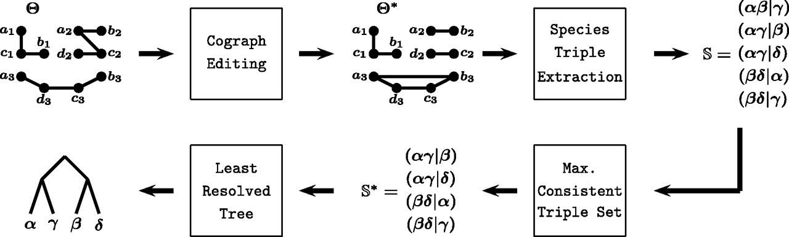
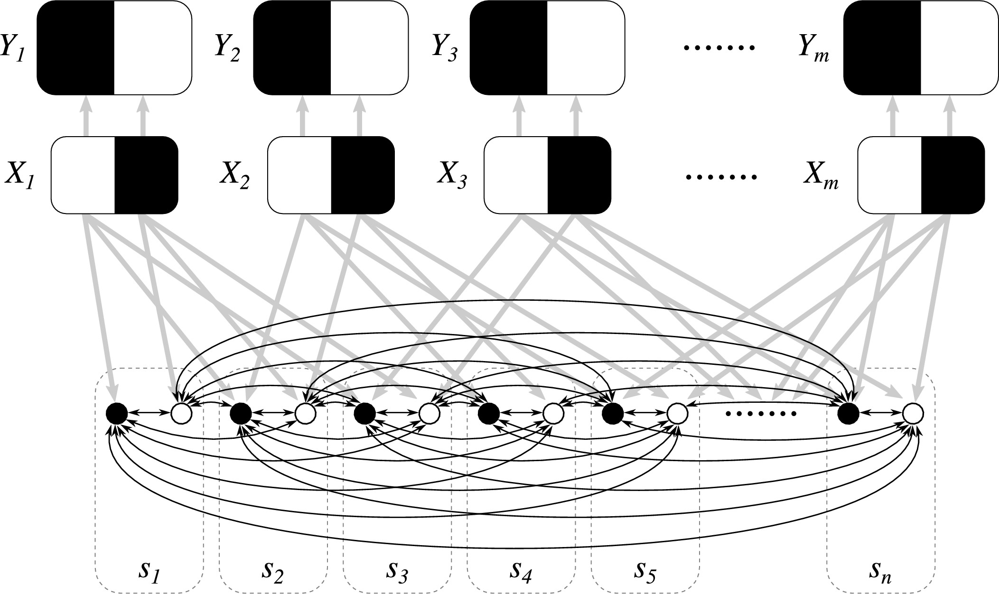
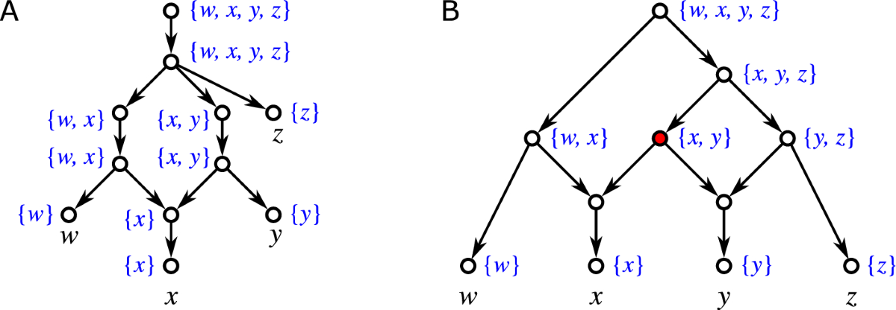
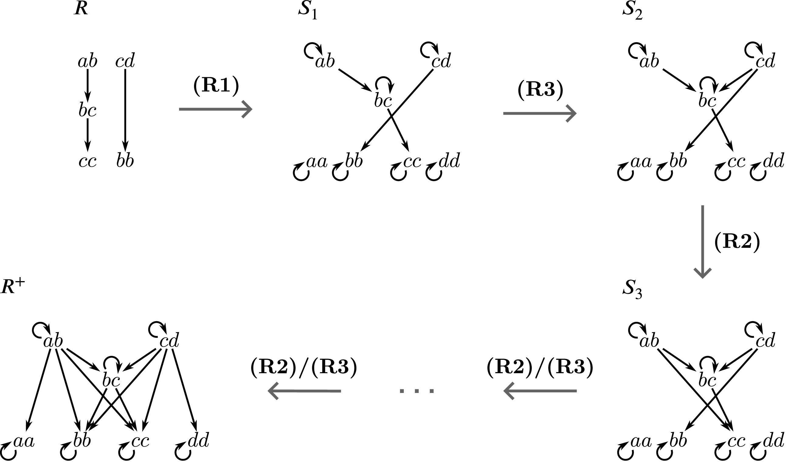
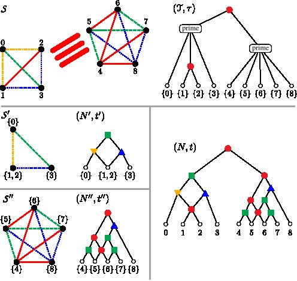
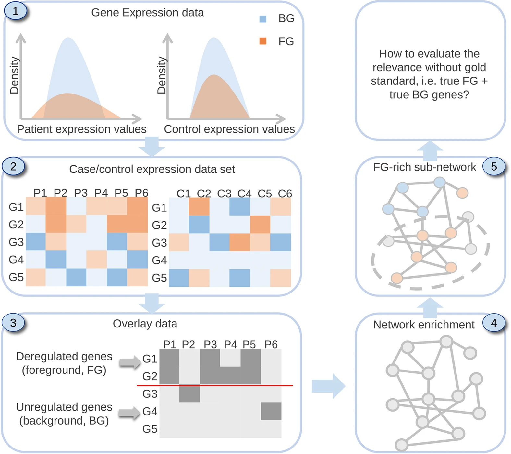

Research overview
Research
Bridging the gap between computer science, mathematics, and other research fields forms the core of my work. A particular emphasis lies on discrete mathematics and theoretical computer science, the structural analysis of complex data, and the development of efficient algorithms for problems arising in the life sciences.
Driving questions
- How can hidden structure in discrete data be characterized mathematically?
- Which features of a discrete structure are essential, which are redundant, and which uniquely determine the structure?
- How can such structural insights be used to design exact, parameterized, approximate, or practical algorithms with rigorous guarantees?
Discrete structures & algorithms
Structural and algorithmic questions in graph theory, combinatorics, discrete optimization, and related areas form a central part of this work.
- Graph theory, combinatorics, and discrete optimization
- Computational complexity, NP-completeness, and fixed-parameter tractability
- Exact algorithms, heuristics, and approximation algorithms
- Integer linear programming and algorithm engineering
- Matroid theory and embeddings of combinatorial objects


Phylogenetic networks & LCA structures
A central theme is the mathematical description and reconstruction of evolutionary structures beyond trees.
- Phylogenetic trees and networks
- Least common ancestors in directed acyclic graphs
- Clustering systems and network reconstruction
- Gene-family histories and horizontal gene transfer
- Orthology, paralogy, and best-match relations


Graph decomposition & product structures
This research area focuses on decompositions that reveal hidden structure and make difficult graph problems tractable.
- Modular decomposition, cographs, and near-cographs
- Graph products and approximate product structures
- Median graphs and metric graph theory
- Network representations of combinatorial structures

Mathematical & computational life sciences
Theoretical insights are developed into methods for extracting interpretable knowledge from biological and chemical data.
- Phylogenomics and rare genomic events
- Gene and protein-interaction networks
- RNA secondary structures and molecular self-assembly
- Atom tracking in chemical reaction networks
- Statistical and network-based analysis of experimental data
